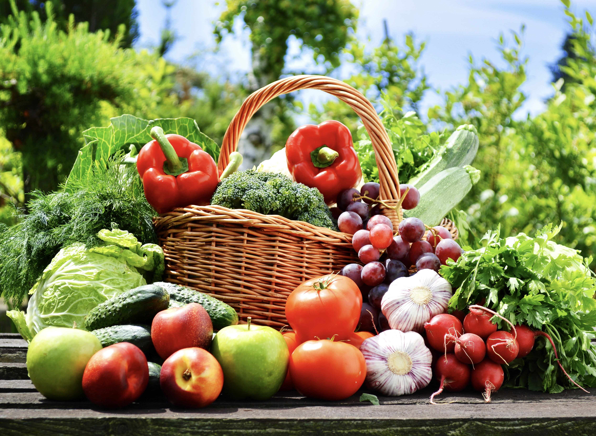

Why To Shift to Organic?..
Better For Your Health
Studies have shown small to moderate increases in some nutrients in organic produce. Organic produce may have more of certain antioxidants and types of flavonoids, which have antioxidant properties. Omega-3 fatty acids.
Organic food refers to food products that are produced, It means organic food production prohibits the use of chemical pesticides, chemical fertilizers, or chemical preservatives.
Consequently, organic foods are increasingly gaining popularity because a greater portion of the population wants to know its benefits. The general public belief is that organic food is healthier compared to the conventional ones, and it’s the primary reason for its increased demand over the past decade.
The choice of consuming organic foods is thus a growing trend in the world of today However, finding accurate facts about organic foods has always been confusing as people have varied opinions regarding its benefits as a whole.
Better For The Environment
Organic farmers use natural methods for fertilisation and pest control, such as crop rotation, composting, and manure. They also produce less carbon dioxide than regular farms, which helps reduce greenhouse gas emissions and offset climate change – and we like that! The positive effects of antioxidants on overall health have been established in a number of scientific studies, especially those derived from organic foods. This is because organic foods are free of foreign chemicals that normally react with vitamins, organic compounds and minerals thus lowering the essential positive impacts of antioxidants in food products.
Latest studies propose that the consumption of organic food can contribute to more intake of nutritiona to heavy metals. The positive impacts of antioxidants obtained from organic foods include prevention of heart disease, cancer, vision problems, premature aging, and cognitive malfunction.
The positive effects of antioxidants on overall health have been established in a number of scientific studies, especially those derived from organic foods. This is because organic foods are free of foreign chemicals that normally react with vitamins, organic compounds and minerals thus lowering the essential positive impacts of antioxidants in food products.
Latest studies propose that the consumption of organic food can contribute to more intake of nutritiona to heavy metals. The positive impacts of antioxidants obtained from organic foods include prevention of heart disease, cancer, vision problems, premature aging, and cognitive malfunction.
Better For Animals & Communities
Organic products have significantly higher animal welfare standards. Beauty products for example are often accompanied by a “cruelty-free” label, meaning they haven’t been tested on our furry friends. Organic farms are also pleasure havens for wildlife, with up to 50% more birds, bees and butterflies cruising their trees and vines.
Organic manufacturing often supports local indigenous peoples too by paying a fair price for labour.